Scalar Python UDF operator: crossing the executor JVM boundary
component index | SQL physical planner
orders.where(F.col("status") == "PAID") builds a Catalyst expression from
Python. An executor JVM can evaluate that comparison itself, and a data source
may push it down. In contrast, a scalar PythonUDF that remains in the plan is
Unevaluable as a normal JVM expression. Spark extracts it into a dedicated
operator. This page follows the external-worker path in classic batch
PySpark, not Spark Connect, a Python table function, or the separate in-process
Arrow evaluator present in this revision.
Flow at a glance
- Executor JVM: The operator keeps each order ID and sends only the status to Python.
- Python worker: Runs the paid-status function and returns the results in input order.
- Row assembly: The operator pairs each result with the oldest saved order ID.
Key distinction: The scalar UDF returns one value per input; the JVM filter decides which orders to keep.
Show the animated flow

How the driver chooses a path
The Python driver wraps the function and declared return type in a JVM
UserDefinedPythonFunction. On the driver JVM, PythonUDF describes the function,
input expressions, SQL result type, eval type, determinism and result ID.
ExtractPythonUDFs finds calls computable from a single child's attributes,
adds typed result attributes (such as pythonUDF0) and rewrites the parent to
read them. Eligible same-eval-type calls can share an operator; an intervening
JVM expression or incompatible eval type can require another operator. The
physical PythonEvals strategy maps the logical eval node to a concrete runner
path. This plan state belongs to the query, not the Python worker.
| Path |
Executor JVM to local Python worker |
Return path |
BatchEvalPythonExec / SQL_BATCHED_UDF |
getInputIterator converts the projected arguments to Java values and pickles batches. PythonUDFWithNamedArgumentsRunner.compute sends the byte arrays. |
Unpickles returned batches and converts values with EvaluatePython.makeFromJava for the declared SQL type. |
ArrowEvalPythonExec / e.g. SQL_ARROW_BATCHED_UDF |
On row input, ArrowPythonWithNamedArgumentRunner with BatchedPythonArrowInput writes Arrow record batches. A supported columnar child can also be consumed directly when enabled. |
Reads Arrow ColumnarBatch results; the row-input evaluator checks their data types and iterates the rows. An Arrow-optimized regular scalar UDF still has a per-value Python API; a scalar pandas UDF uses a different eval type and a series-oriented API. |
The comparison is about row data, not the serialization of the function
itself. useArrow=False explicitly selects the regular pickle path; requesting
Arrow does not convert a scalar function into a pandas UDF. For a regular
Arrow-optimized UDF, missing Python dependencies at construction or a configured
UDT fallback at extraction can select pickle. That is not a retry policy for
Python exceptions. Python selection · JVM descriptor ·
extraction and rewrite · strategy dispatch · UDT fallback.
Trace: retain an order ID while Python evaluates its status
from pyspark.sql import functions as F
@F.udf(returnType="boolean", useArrow=False)
def is_paid(status):
return None if status is None else status == "PAID"
paid_ids = orders.where(is_paid("status")).select("order_id")
- With experimental Python-to-Catalyst transpilation off, the filter consumes
a boolean result attribute above
BatchEvalPython; the comparison in the
function body is not a JVM filter on status. The child supplies status
for the UDF argument and order_id for the final projection.
EvalPythonExec.doExecute constructs a partition evaluator. For each task
attempt, EvalPythonPartitionEvaluator.eval binds the arguments, deduplicates
equivalent argument expressions and records their offsets (and names, if any).
Only projected UDF arguments go to the worker; order_id need not cross the
socket. The executor-side runner communicates with a
local Python worker; there is no call to the Python
driver per row.- On the ordinary row path, the evaluator puts the required pass-through fields
in a task-local FIFO
HybridRowQueue before sending each input. Returned scalar
results correspond one-for-one, in input order. Each result is paired with
the oldest saved fields via JoinedRow and an UnsafeProjection. No key lookup
or shuffle is involved. If no child fields are needed, the generic evaluator
skips the queue and emits projected results directly.
- For
(order_id, status) inputs (41, "PAID"), (42, NULL), (43, "OPEN"),
Python returns true, NULL, false. The JVM filter retains only order 41;
the filter, not the scalar UDF operator, changed the row count. Task
completion closes the queue. A reused Python process does not reuse that
partition's queue or result rows. Partition execution · alignment.
Where time or failures show up
Use paid_ids.explain("formatted") to identify BatchEvalPython or
ArrowEvalPython and the JVM filter above it. Compare the SQL operator's data
sent to Python workers, data returned, number of output rows, and worker
timings with the native expression. Batching amortizes crossings but wide inputs
can make a single pickle buffer expensive; pickle row/estimated-byte limits and
Arrow record-batch limits are separate controls. A producer ahead of the worker
can also grow the pass-through queue until it spills to executor-local disk.
A user-function exception is returned to the executor as a Python error and
fails that task attempt; an incompatible Arrow result schema can instead fail
the JVM evaluator. Check the Python traceback or schema mismatch in the failed
task's executor log. A repeatable bad input is not fixed by a task retry, and
neither path silently substitutes NULL for a thrown exception.
Implementation: pickle encoding · pickle runner and decoding ·
Arrow evaluator and type check · columnar input eligibility ·
Python SQL metrics · worker exception decoding.